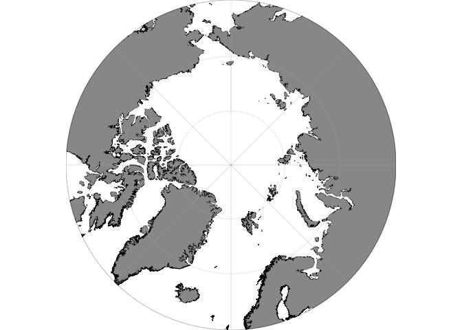

Plot data on oceanographic maps using ggplot2. R package version 1.1.7

Overview
The ggOceanMaps package for R allows plotting data on bathymetric maps using ggplot2. The package is designed for ocean sciences and greatly simplifies bathymetric map plotting anywhere around the globe. ggOceanMaps uses openly available geographic data. Citing the particular data sources is advised by the CC-BY licenses whenever maps from the package are published (see the Citations and data sources section).
The ggOceanMaps package has been developed by the Institute of Marine Research. Note that the package comes with absolutely no warranty and that maps generated by the package are meant for plotting scientific data only. The maps are coarse generalizations of third-party data and therefore inaccurate. Any bug reports and code fixes are warmly welcomed. See Contributions for further details.
Installation
The package is available as a CRAN version, which is updated infrequently (a few times a year), and a GitHub version, which is updated whenever the author works with the package. Try the GitHub version if you encounter a bug in the CRAN version.
Due to the package size limitations, ggOceanMaps requires the ggOceanMapsData package which stores shapefiles used in low-resolution maps. The ggOceanMapsData package is not available on CRAN but can be installed from a drat repository on GitHub. To install both packages, write:
install.packages(c("ggOceanMapsData", "ggOceanMaps"),
repos = c("https://cloud.r-project.org",
"https://mikkovihtakari.github.io/drat"
)
)The (more) frequently updated GitHub version of ggOceanMaps can be installed using the devtools package.
devtools::install_github("MikkoVihtakari/ggOceanMapsData") # required by ggOceanMaps
devtools::install_github("MikkoVihtakari/ggOceanMaps")Usage
ggOceanMaps extends on ggplot2. The package uses spatial shapefiles, GIS packages for R to manipulate, and the ggspatial package to help to plot these shapefiles. The shapefile plotting is conducted internally in the basemap function and uses ggplot’s sf object plotting capabilities. Maps are plotted using the basemap() or qmap() functions that work almost similarly to ggplot() as a base for adding further layers to the plot using the + operator. The maps generated this way already contain multiple ggplot layers. Consequently, the data argument needs to be explicitly specified inside geom_* functions when adding ggplot2 layers. Depending on the location of the map, the underlying coordinates may be projected. Decimal degree coordinates need to be transformed to the projected coordinates using the transform_coord, ggspatial, or geom_sf functions.
library(ggOceanMaps)
dt <- data.frame(lon = c(-30, -30, 30, 30), lat = c(50, 80, 80, 50))
basemap(data = dt, bathymetry = TRUE) +
geom_polygon(data = transform_coord(dt), aes(x = lon, y = lat), color = "red", fill = NA)
See the ggOceanMaps website, function reference, and the user manual for how to use and modify the maps plotted by the package. You may also find these slides about the package useful.
Data path
While ggOceanMaps allows plotting any custom-made shapefiles, the package contains a shortcut to plot higher resolution maps for certain areas needed by the author without the need of generating the shapefiles manually. These high-resolution shapefiles are downloaded from the ggOceanMapsLargeData repository. As a default, the shapefiles are downloaded into a temporary directory meaning that the user would need to download the large shapefiles every time they restart R. This limitation is set by CRAN policies. You can define a custom folder for high-resolution shapefiles on your computer by modifying your .Rprofile file (e.g. usethis::edit_r_profile()). Add the following lines to the file:
.ggOceanMapsenv <- new.env()
.ggOceanMapsenv$datapath <- 'YourCustomPath'It is smart to use a directory R has writing access to. For example "~/Documents/ggOceanMapsLargeData" would work for most operating systems.
You will need to set up the data path to your .Rprofile file only once and ggOceanMaps will find the path even though you updated your R or packages. ggOceanMaps will inform you about your data path when you load the package.
Citations and data sources
The data used by the package are not the property of the Institute of Marine Research nor the author of the package. It is, therefore, important that you cite the data sources used in a map you generate with the package. The spatial data used by this package have been acquired from the following sources:
- ggOceanMapsData land polygons. Natural Earth Data 1:10m Physical Vectors with the Land and Minor Island datasets combined. Distributed under the CC Public Domain license (terms of use).
- ggOceanMapsData glacier polygons. Natural Earth Data 1:10m Physical Vectors with the Glaciated Areas and Antarctic Ice Shelves datasets combined. Distributed under the CC Public Domain license (terms of use).
- ggOceanMapsData bathymetry. Amante, C. and B.W. Eakins, 2009. ETOPO1 1 Arc-Minute Global Relief Model: Procedures, Data Sources and Analysis. NOAA Technical Memorandum NESDIS NGDC-24. National Geophysical Data Center, NOAA. Distributed under the U.S. Government Work license.
- Detailed shapefiles of Svalbard and Norwegian coast in ggOceanMapsLargeData are from Geonorge.no. Distributed under the CC BY 4.0 license.
- Detailed bathymetry of the Barents Sea in ggOceanMapsLargeData is vectorized from the General Bathymetric Chart of the Oceans 15-arcsecond 2020 grid. Terms of use
Further, please cite the package whenever maps generated by the package are published. For up-to-date citation information, please use:
citation("ggOceanMaps")
#>
#> To cite package 'ggOceanMaps' in publications use:
#>
#> Mikko Vihtakari (2021). ggOceanMaps: Plot Data on Oceanographic Maps
#> using 'ggplot2'. R package version 1.1.7.
#> https://mikkovihtakari.github.io/ggOceanMaps/
#>
#> A BibTeX entry for LaTeX users is
#>
#> @Manual{,
#> title = {ggOceanMaps: Plot Data on Oceanographic Maps using 'ggplot2'},
#> author = {Mikko Vihtakari},
#> year = {2021},
#> note = {R package version 1.1.7},
#> url = {https://mikkovihtakari.github.io/ggOceanMaps/},
#> }Getting help
If your problem does not involve bugs in ggOceanMaps, the quickest way of getting help is posting your problem to Stack Overflow. Please remember to include a reproducible example that illustrates your problem.
Contributions
Any contributions to the package are more than welcome. Please contact the package maintainer Mikko Vihtakari (mikko.vihtakari@hi.no) to discuss your ideas on improving the package. Bug reports and corrections should be submitted directly to the GitHub site. Please include a minimal reproducible example. Considerable contributions to the package development will be credited with authorship.
Debugging installation
After a successful installation, the following code should return a plot shown under
library(ggOceanMaps)
basemap(60)
If the basemap() function complains about ggOceanMapsData package not being available, the drat repository may have issues (assuming you followed the installation instructions above). Try installing the ggOceanMapsData package using the devtools/remotes package. The data package does not contain any C++ code and should compile easily.
If you encounter problems during the devtools installation, you may set the upgrade argument to "never" and try the following steps:
- Manually update all R packages you have installed (Packages -> Update -> Select all -> Install updates in R Studio). If an update of a package fails, try installing that package again using the
install.packagesfunction or the R Studio menu. - Run
devtools::install_github("MikkoVihtakari/ggOceanMaps", upgrade = "never"). - If the installation of a dependency fails, try installing that package manually and repeat step 2.
- Since R has lately been updated to 4.0, you may have to update your R to the latest major version for all dependencies to work (
stars,rgdalandsfhave been reported to cause trouble during the installation).